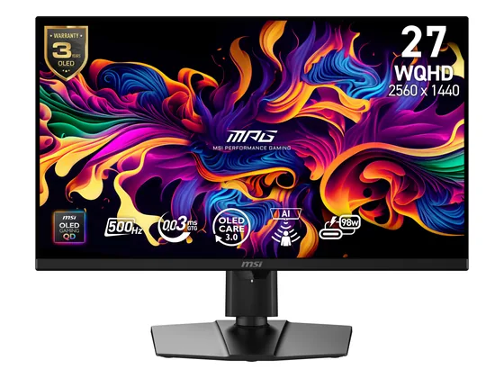
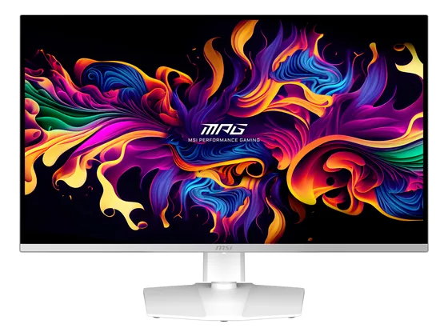

Sony Inzone M10S : avis, tests et prix
Le verdict en une phrase. Un OLED QHD à 480 Hz pensé pour l'e-sport : clarté de mouvement inouïe et latence très faible. Pour joueurs compétitifs exigeants, à un prix élevé.
N° 7 sur 10 dans le top 10 Écrans PC gaming.
Pour qui ?
Vous jouez en compétitif (FPS, e-sport) et chaque milliseconde compte.
Vous jouez surtout à des jeux solo : un OLED 240 Hz offre la même image pour bien moins cher.
Le consensus de la presse
Sur 6 notes, 5 atteignent ou dépassent 8/10. La plus haute : 10,0/10 (TechRadar) ; la plus basse : 7,0/10 (Multiplayer.it).
Où l'acheter
La configuration peut différer d'un marchand à l'autre : vérifiez la fiche avant d'acheter. Seuls les liens Amazon sont affiliés à ce jour ; les autres sont de simples liens directs. Aucun n'influence les notes ni le classement.
Tous les tests recensés
Chaque ligne renvoie vers le test d'origine. Les notes sont converties sur 10 ; « test » signale un article sans note chiffrée. Notre méthode.
- TechRadar10,0
- RTINGS9,0
- Frandroid8,0
- GamesRadar8,0
- T38,0
- Multiplayer.it7,0
- Digital Trendstest
- PCWorldtest
Les alternatives pour le même usage
Tout le top 10 →
MSI MPG 271QR X50Un QD-OLED de dernière génération à 500 Hz : fluidité inégalée et très bonne luminosité plein écran. Un écran d'exception, au tarif qui va avec. N° 6 · Le 32" OLED malin
MSI MPG 321URXUn 32 pouces 4K QD-OLED à 240 Hz, très bien noté, avec peu de scintillement VRR et une garantie marquage de 3 ans, souvent moins cher que ses rivaux. N° 8 · Le QD-OLED premium Alienware AW2725DUn QD-OLED 280 Hz très bien fini, lumineux en HDR et très fluide, avec un pied solide : un excellent écran de jeu QHD.Questions fréquentes
Que pense la presse de l'écran Sony Inzone M10S ?
La note presse moyenne est de 8,3/10, calculée sur 6 notes (de 7,0 à 10,0/10). Un OLED QHD à 480 Hz pensé pour l'e-sport : clarté de mouvement inouïe et latence très faible. Pour joueurs compétitifs exigeants, à un prix élevé.
Quels sont les points faibles relevés par les tests ?
Très cher pour du QHD ; Pas d'USB-C, garantie marquage d'un an.
À qui s'adresse le modèle Sony Inzone M10S ?
Vous jouez en compétitif (FPS, e-sport) et chaque milliseconde compte. À éviter si : vous jouez surtout à des jeux solo : un OLED 240 Hz offre la même image pour bien moins cher.
Où l'acheter, et à quel prix ?
Comptez environ 830 € (prix indicatif constaté en octobre 2026). Nous l'avons trouvé en vente chez Amazon. Les prix changent vite et la configuration peut différer d'un marchand à l'autre : seul le prix affiché par le marchand fait foi.